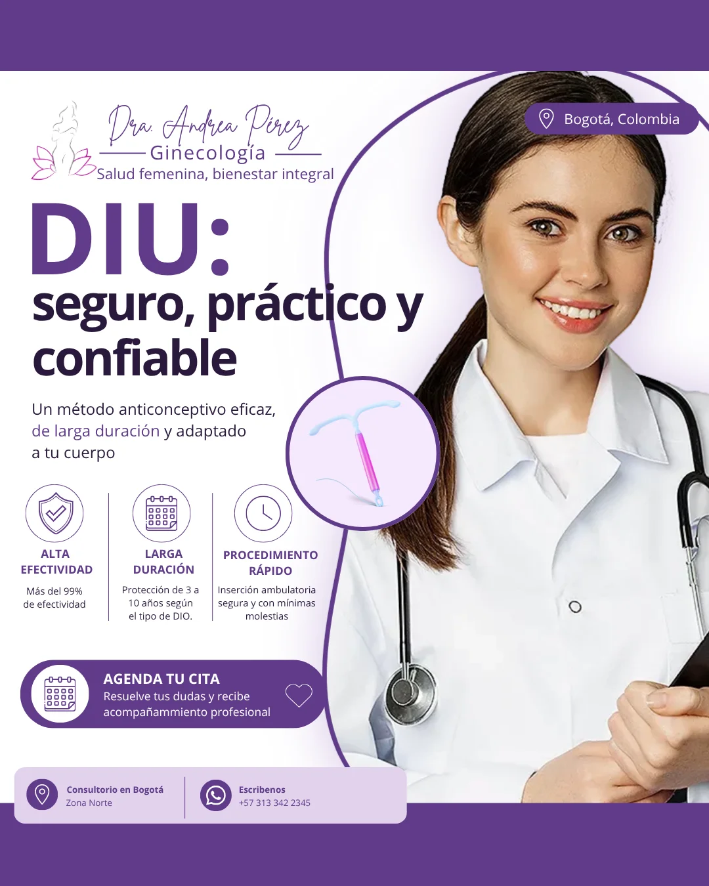

← Todos los proyectos
Diseño corporativo
Sector Salud
Una pieza gráfica para comunicar información del sector salud mediante jerarquía visual, tipografía y composición.

SOBRE EL PROYECTO
Información que se entiende de un vistazo.
El trabajo se presenta a través de una pieza final. La composición organiza los textos y los recursos gráficos para dar prioridad al mensaje y facilitar su lectura.
Piezas y proceso
DISEÑO DE INFORMACIÓN
Un mensaje, una jerarquía.
La pieza permite observar cómo se relacionan título, información de apoyo y elementos visuales dentro de un mismo formato. El objetivo de la presentación es mostrar el diseño final y su aplicación a la comunicación institucional.